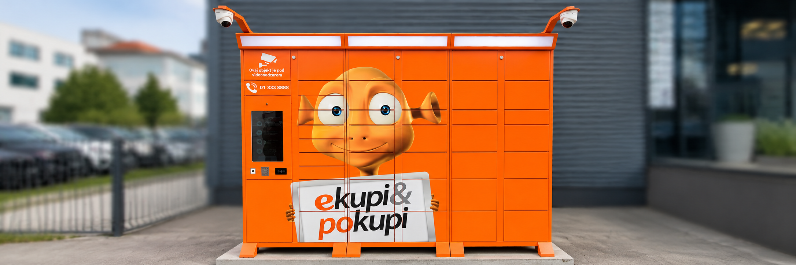
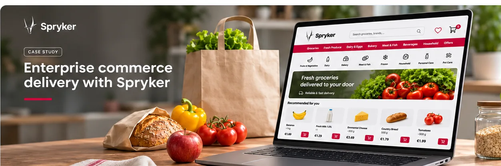
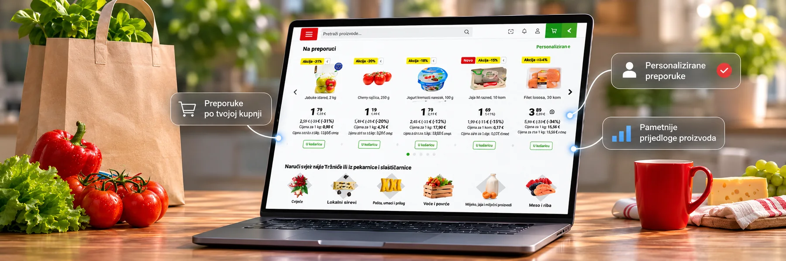

Product thinking
User journeys, MVP decisions, backlog priorities and a clear view of the value a feature should create.
I connect business, people and technology to build digital products that make sense in the real world. From grocery eCommerce and logistics to modern self-service experiences.
Good delivery starts with understanding the problem. I help teams define priorities, make trade-offs and connect software with the messy, interesting world of real business.
User journeys, MVP decisions, backlog priorities and a clear view of the value a feature should create.
Cross-functional teams, partners, integrations, releases and the everyday decisions that keep delivery moving.
Webshops, omnichannel, loyalty, logistics, platforms and the operational processes behind a great customer experience.
Projects with different technologies, but one common thread: connecting decisions to real delivery.

From an idea on paper to a physical, digital and logistics service.

Managing priorities and delivery across a modern, integration-heavy eCommerce platform.

Connecting retail operations and technology behind a refreshed online shopping experience.

Working on personalized product recommendations using existing retail and loyalty data.
I have moved between hands-on systems, development leadership, eCommerce platforms and product ownership — always close to the work that makes business change real.
Digital strategy, web & mobile product ownership, process automation
eCommerce Product / Project Manager, Spryker
Head of IT Development, commerce & logistics initiatives
Online Platforms → Head of eCommerce IT
I follow Agentic Commerce, AI-assisted workflows and the growing importance of structured product data. I’m interested in practical use cases, not technology for its own sake.
Outside everyday product work, I try things for myself: private cloud computing, local AI, small automations and new ways of working. I document what actually helped, what did not, and what I learned.
A personal cloud PC, AI models running locally, connecting devices across platforms, and occasional thoughts about digital products and commerce.
Browse Articles & Lab ↗Open to senior Product, Delivery, eCommerce and Digital Transformation opportunities — where business, technology and people need to work together.